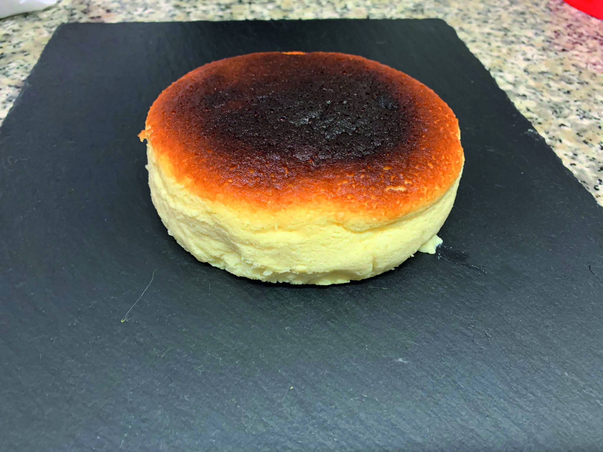

PASTIS DE FORMATGE
Ingredients
- 4 ous
- ½ suc de llimona
- Ratlladura d'una llimona
- 200 gr de formatge crema
- 200 ml de llet
- 80 gr de sucre
- 50 gr de farina
Preparació
- Fiquem el formatge crema 30 segons en el microones perquè s’estovi una mica.Una vegada escalfat es barreja fins que tingui una textura cremosa, s’afegeix la llet.
- Separem les clares i els rovells, seguit incorporem els rovells a la barreja de llet i formatge i batim fins que s’integrin tots. A continuació, colem la barreja per a desfer-nos dels ensopecs de formatge, i afegim el suc de llimona, la ratlladura i la farina tamisada i es torna a barrejar.
- Muntem les clares, quan estiguin espumoses li incorporem la meitat del sucre, quan s’ha integrat afegim l’altra meitat i es continua batent.
- Una vegada estigui ferma afegim la meitat a la mescla de formatge i barrejem suaument, quan tinguem una massa homogènia, afegim l’altra meitat i es fa el mateix.
*Podem anar preescalfar el forn a 140º centígrads.
- Preparem un motlle circular amb paper de forn untat amb mantega i aboquem la massa, introduim el motlle a una safata profunda dins del forn i afegim aigua calenta perquè es faci al bany maria.
- Ho deixem 40 minuts a 140 graus, després baixem la temperatura a 120 durant 20 minuts, deixem la porta del forn 10 minuts entreoberta perquè el pastís no sofreix d’un canvi de temperatura brusc. Ho deizem reposar sobre una reixeta, quan estigui fred ho desmoldem.
